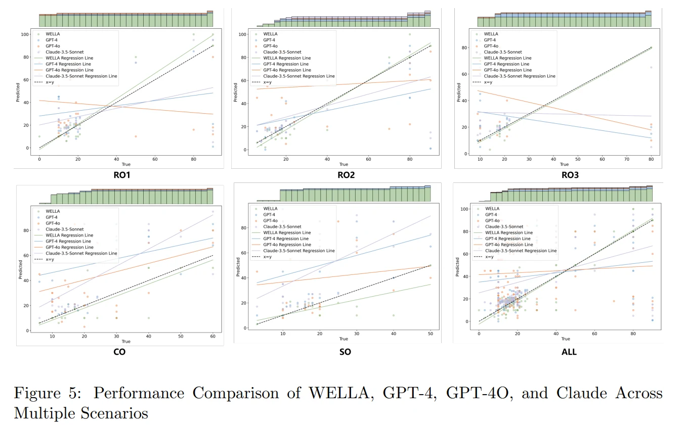
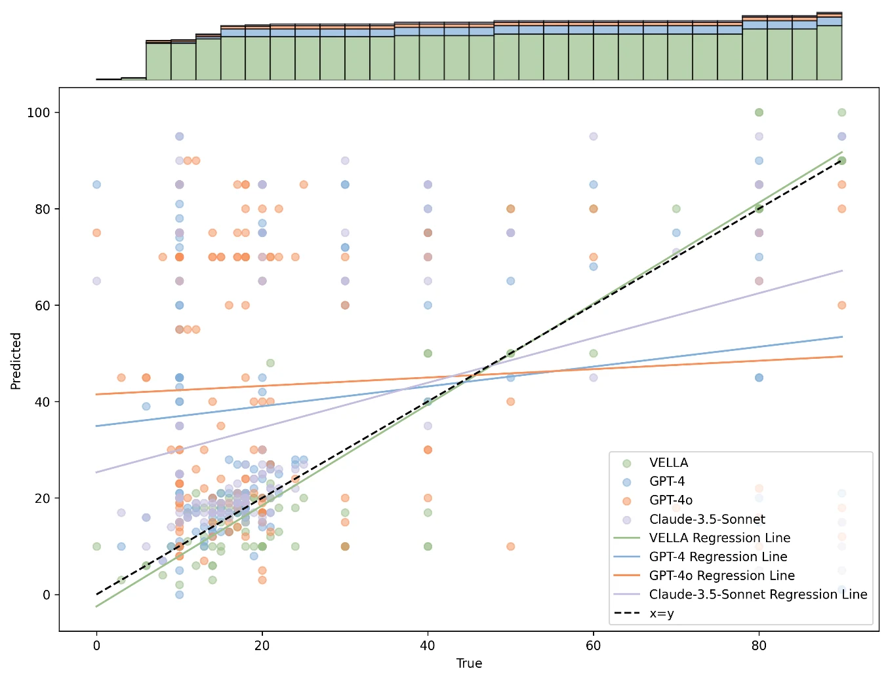

{kind=link}
01 / RESULTS
工作负荷可以随任务变化而估计。
在 RO3 场景中，WELLA 的 R² 为 0.9628；不同场景的表现存在差异，CO 与 SO 的拟合程度明显低于 RO 场景。
模型对比 RO3 / RMSE
RMSE 与 MAE 越低越好
02550
同一场景下比较各模型的预测误差。R² 与 EV 见下方数据表。
查看对应场景的完整数据
| 模型 | R² | RMSE | MAE | EV |
|---|---|---|---|---|
| GPT-4 | -2.0091 | 31.7849 | 19.6400 | -1.76788 |
| GPT-4o | -4.6050 | 43.3797 | 34.4400 | -2.9852 |
| Claude-3.5-Sonnet | -1.9544 | 31.4948 | 18.4000 | -1.5861 |
| WELLA | 0.9628 | 3.5327 | 1.9200 | 0.9666 |
WELLA 的跨场景表现
R²，越接近 1 表示拟合程度越高
00.51.0
02 / METHODOLOGY
研究方法
传统问卷和认知建模往往需要事后填写、专家输入或大量任务建模。WELLA 以情景为驱动，通过认知过程库和多智能体协作，减少手动建立任务序列的工作。研究针对高温气冷堆中一人管理两堆及多人协作的场景。
01
真实操作数据
用真实操纵员实验形成行为与认知依据。
02
场景与任务输入
输入操作场景，以及人员的岗位职责。
03
认知过程推演
以虚拟认知过程组织任务与多智能体协作。
04
负荷估计
输出工作负荷与情境意识，支持动态分析。
03 / EVIDENCE & APPLICATION
实验与案例
{kind=link}

{kind=link}

与 HUNTER 的输入和输出比较
| 比较维度 | HUNTER | WELLA |
|---|---|---|
| 输入 | 任务、规程、步骤与厂级参数；PSF；仿真参数 | 场景（任务）与岗位职责简述 |
| 输出 | 基于执行时间与允许时间判断失误 | 工作负荷与情境意识 |
| 自动化 | 依赖专家分析 PSF 等因素 | 场景驱动的自动化流程 |
| 任务适用性 | 需要预先建立任务模型 | 以场景驱动，支持不同任务分析 |
04 / FINDINGS
研究结论
01
场景决定估计质量
RO1、RO2、RO3 的 R² 分别为 0.9012、0.9343、0.9628；CO 与 SO 分别为 0.4216、0.3822。
02
减少输入负担
对比 HUNTER，WELLA 以场景和岗位职责作为输入，输出更细的工作负荷与情境意识信息。
03
面向动态协作
研究覆盖真实操纵员和多人协作，希望支持随场景变化的负荷预测与预警。